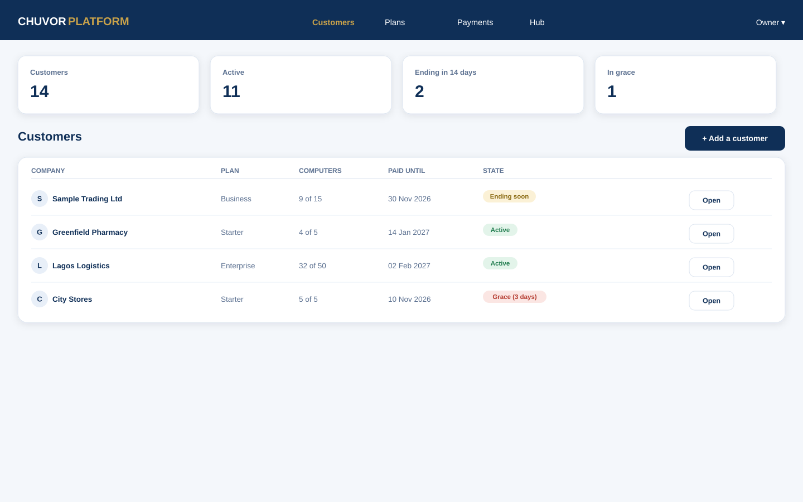
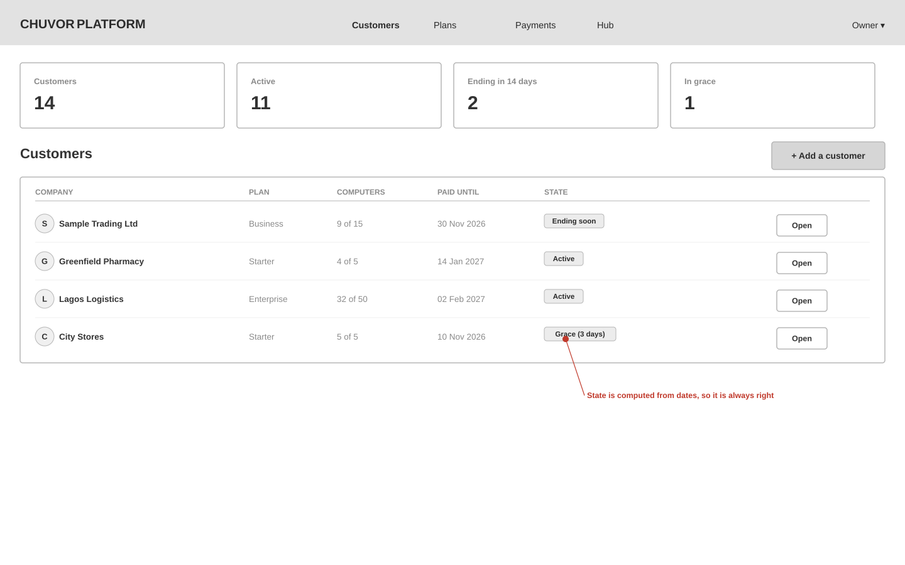

Staff open one company program from approved computers only, and receipts and documents print quickly on their own printer. It is sold as a subscription to many companies. I designed the Windows app and the control panels and built the platform behind them.
The users are shop and office staff, not IT people.
The administrator must approve or remove a computer in one click.
The owner needs many companies on one platform with expiry that cannot go wrong.
Support needs to know quickly whether “slow” is the network or the program.
This led to· Fear of settings · Slow, uncertain support · Risk of access after expiry
(02)
Solution
One large button, a status in a sentence, help under every control, and a control plane where state is computed from dates and every refused action is tested.
(03)
Key design decisions
1.
One obvious action
A large “Open your program” button with two lines under it saying what happens next.
Status in a sentence: “Connected to your company computer”.
2.
Quality in plain words
The last eight delay measurements become Excellent, Good, Fair or Poor, with a sentence on what to try.
Jitter and lost messages are counted, not just the average.
3.
A control panel that explains itself
Computers table with plain statuses and one button per row.
One-time codes to add a computer, with their rules written beside them.
Every switch says what it does and what “off” means.
Company control panel
4.
State from dates, never stored
Active, ending soon, grace, expired, suspended and pending are computed every time.
The same function feeds the app, the admin panel and the access check.


Platform owner’s customers view
(04)
Outcome
Launched and in use.
143 automated checks on the platform, including that one company can never see another’s data.
One test exposed a real bug (a refused request still ran), which I fixed.
(05)
My role
Interface design for the app and panels.
Windows Forms app, control panel and API.
Network, installer and documentation.
(06)
Key takeaway
Non-technical users need fewer choices, not more explanations. Design the one path, and make everything else safe.
See the code Real code from this product, with the problem it solves.